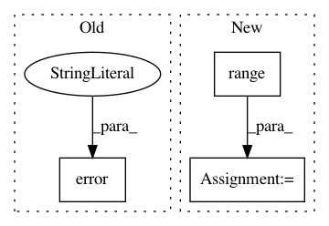

3d03ae2086b232cb6803507ae4defd997c256ec9,tensorflow/python/distribute/multi_process_lib.py,,_set_spawn_exe_path,#,90
Before Change
if os.access(possible_path, os.X_OK):
path = possible_path
if path is None:
logging.error(
"Cannot determine binary path. sys.argv[0]=%s os.environ=%s",
sys.argv[0], os.environ)
raise RuntimeError("Cannot determine binary path")
sys.argv[0] = path
// Note that this sets the executable for *all* contexts.
multiprocessing.get_context().set_executable(sys.argv[0])
After Change
path_to_use = None
guess_path = sys.argv[0][:-3]
guess_path = guess_path.split(os.sep)
for path_reduction in range(-1, -len(guess_path), -1):
possible_path = os.sep.join(guess_path[:path_reduction] +
[guess_path[-1]])
if os.access(possible_path, os.X_OK):
path_to_use = possible_path
break
// The binary can possibly have _gpu suffix.
possible_path += "_gpu"
if os.access(possible_path, os.X_OK):
path_to_use = possible_path
break
if path_to_use is None:
raise RuntimeError("Cannot determine binary path")
sys.argv[0] = path_to_use
// Note that this sets the executable for *all* contexts.
In pattern: SUPERPATTERN
Frequency: 4
Non-data size: 3
Instances
Project Name: tensorflow/tensorflow
Commit Name: 3d03ae2086b232cb6803507ae4defd997c256ec9
Time: 2020-11-18
Author: crccw@google.com
File Name: tensorflow/python/distribute/multi_process_lib.py
Class Name:
Method Name: _set_spawn_exe_path
Project Name: home-assistant/home-assistant
Commit Name: 8c728d1b4eaf5f66570d7a9d139cd8e1940c551f
Time: 2016-07-26
Author: kellerza@gmail.com
File Name: homeassistant/components/device_tracker/icloud.py
Class Name:
Method Name: setup_scanner
Project Name: home-assistant/home-assistant
Commit Name: abcfcdd8872dfe36c3a96afafdb4ba7f6abeb47d
Time: 2017-07-26
Author: cby@cby.me
File Name: homeassistant/components/weather/yweather.py
Class Name:
Method Name: setup_platform
Project Name: ilastik/ilastik
Commit Name: efd6b7c39fbefbb1e6f5fdc67ff1d2c64f65d46e
Time: 2012-09-13
Author: christoph.straehle@iwr.uni-heidelberg.de
File Name: lazyflow/operators/obsolete/classifierOperators.py
Class Name: OpTrainRandomForest
Method Name: getOutSlot